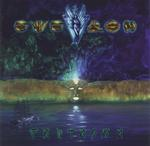

Home Artist links Label link

| Artist: | Everon |
| Title: | Fantasma |
| Label: | Mascot Records M 7045 2 |
| Length(s): | 52 minutes |
| Year(s) of release: | 2000 |
| Month of review: | 04/2000 |
Line up
Oliver Philipps - vocals, lead guitar, piano, keyboards
Christian Moos - drums
Ulli Hoever - guitars
Schymy - bass
Tracks
| 1) | Men Of Rust | 6.20
|
| 2) | Perfect Remedy | 5.19
|
| 3) | Fine With Me | 3.33
|
| 4) | A Day By The Sea | 5.47
|
| Fantasma (5-9)
|
| 5) | Right Now... | 2.04
|
| 6) | ...til The End Of Time | 5.16
|
| 7) | Fantasma Theme | 0.38
|
| 8) | The Real Escape | 4.24
|
| 9) | Whatever It Takes | 2.10
|
| 10) | Battle Of Words | 3.42
|
| 11) | May You | 4.33
|
| 12) | Ghosts -intro | 1.52
|
| 13) | Ghosts | 5.52
|
Summary
After their best one yet, Venus, the band had quite a lot of problems. They
were to play at iO Progheaven in 1997, but personal problems arose and this
is probably also why it took the band so long to return with a new album.
The music
Men Of Rust opens the album with bombast. Quick piano work, varied drumming
and an anthemic guitar right through it, until the slow vocal part starts.
After such an opening it is hard to come up with a vocal part that is not
a let down and the band succeeds in avoiding it. The chorus is strangely
enough the softest part, because during the verses the guitars are very loud.
Then the bands gets in a hurry in the second phase of the song. At first it
seems like an extended bridge, but it is repeated later on. A great song.
Perfect Rememdy opens slowly and seems at first a ballad like piece. The chorus
is also a melodic, rather subtle one, but then the band sets in the
verses/chorus again, but much louder. This part sounds rather chaotic with
so much happening and lots of vocals intertwined. The third verse is again
in a quiet mode. The lyrics are quite good, being about relations between
people. Certainly not cliche or anything. Fine With Me moves us into the
rock again. The guitar work reminds me at times of that of Fish'
(Alex Harvey's) Faithhealer. This is progmetal with plenty of breaks and
variation. A Day By The Sea is the antidote to its loud predecessor. It
shows also here that Philipps still has an accent of sorts, or in any case,
a typical voice. But it is not disturbing. The verses are quite minimal in
their instrumentation, but the vocal part is loud again. The instrumental
is an extended guitar solo. I'd like to point out that the drummer is really
in good form on this album, but his playing also comes out well because
of the great production.
The next five tracks together form the title track Fantasma (about 14.5
minutes). The first of these is Right Now... a two minute power instrumental
with off-beat signatures, sharp guitarplaying turning into progmetal towards
the end with fastpaced double bass drumming. In ...Til The End Of Time the
sound is still metallic but heavy instesd of fast. The rhtyhm guitars are quite
prominent here, the verses are slow and dark, the chorus is striking. The
melodies on this album are all well thought through. During the bridge
the lyrics and music become positively romantic. After the painic theme we come
to the acoustic ballad The Real Escape that also features some low cello tones
and synthetic strings, and comes to a bombastic eruption toward the end
moving right into the tracks Finale, Whatever It Takes.
Quick piano, rough guitars and pouncing drums make up the intro to Battle Of
Words, which happens to be an instrumental. Some Spanish guitar is also
featured, but for the rest this is a bombastic adventure. After the mellow
May You we come to Ghosts, or actually the intro to Ghost. After some washes
of synths, the piano starts and later is accompanied by the guitar, all
very melodic. The vocal track is an uplifting piece and features a grand
conclusion.
Conclusion
Again I like an Everon album better than its predecessor. Like Venus before
it it surpasses all the albums. One reason is that on earlier albums Philipps
had the tendency to clog all the song with lyrics and singing, another is that
the melodic material and powerful production make almost all of the songs on
this albums recognizable and memorable. The music lies somewhere between
progmetal and melodic rock and hardly refers to anything except the previous
albums by this band.
© Jurriaan Hage